국내 컵라면 40종의 가격 · 중량 · 영양성분 비교 분석

편의점·온라인에서 가장 흔히 사는 한 끼.
같은 1,000원대여도 담긴 양과 영양은 다르다.
비싼 제품이 꼭 더 “가성비”라는 보장은 없다.
브랜드제품명중량가격묶음수량개당가격열량나트륨탄수화물당류지방단백질소컵/큰컵국물/볶음출처 URL
원칙 · 봉지라면 제외 · 동일 제품 중복 제거 · 확인 불가 값은 추정하지 않고 null · 묶음상품은 수량이 명확할 때만 개당가격 계산 · 모든 값에 출처 URL 보존
영양성분은 제조사 공식 페이지에 텍스트로 공개된 제품(삼양·팔도)을 우선 사용했습니다. 농심·오뚜기는 영양라벨이 이미지로만 제공되어 null 처리했습니다.
상관은 인과가 아닙니다. 약한 양(+)의 관계로, 가격만으로 용량을 예측하기는 어렵습니다.
영양성분 값은 제조사 공식 표기 기준이며, 농심·오뚜기 제품은 이미지 라벨로 인해 그래프에서 제외되었습니다.
집단별 영양정보 보유 제품(국물형 6종 / 볶음형 5종) 기준입니다.
가격과 중량의 상관은 r=0.41. 비싼 컵라면이 항상 더 많지는 않습니다.
같은 1,000원대에서도 100g당 가격은 최대 2.2배 차이납니다.
국물형 평균 1,612mg vs 볶음형 1,230mg. 국물까지 마시면 차이는 더 커집니다.
중량과 나트륨은 r=0.71의 강한 양의 상관. 큰 컵은 그만큼 나트륨도 큽니다.
모든 수치는 본 프로젝트에서 직접 수집한 40개 제품 데이터에서 계산했습니다.
값이 비싸다고
더 좋은 것은 아니다.
100g당 가격과 나트륨을 함께 보면, 같은 1,000원대에서도 선택의 기준이 달라진다. 라벨이 공개된 제품일수록 소비자 비교가 쉬워진다.